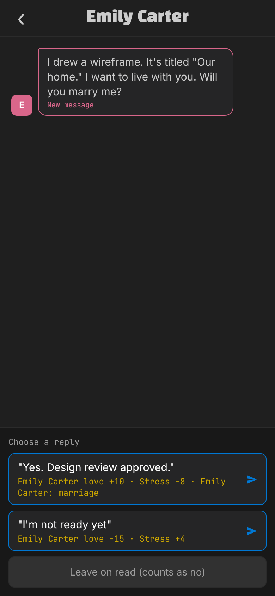
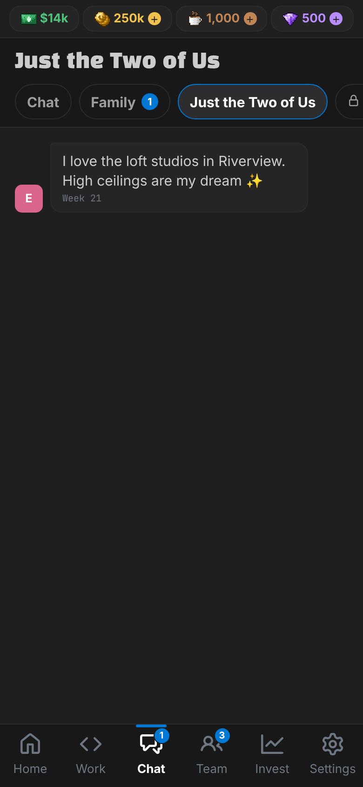

Emily Carter guide
Emily, the UX designer on your team. From meeting her to marriage, living together, newlywed life, parenting and all 5 endings, plus the rules shared by every heroine
The UX designer on your team. She spots a 1px misalignment from 20 steps away and has a cat named Pixel.
- Her first message comes in week 2. No title needed: anyone at the first company (big company) meets her.
- Pick the warm reply (the first one) to her weekly messages and keep scheduling dates, and you can go all the way to marriage.
- Never do these: turn down the confession or proposal, leave her messages on read (-15), or have a week with 0 dates while dating (-30).
- The Rules shared by every heroine at the bottom of this page apply to every other heroine guide as well 📌
Emily is the first heroine to talk to you on your first run. You are on the same team, so it starts with work talk, then slowly gets closer over strawberry milk and sticky notes with cat doodles. She needs no special gear or title, so she is perfect for practicing your first marriage ending. The only trap: she is a coworker, so changing jobs cuts her off. Just watch out for that 😉
How to meet her#
| Item | Condition |
|---|---|
| Company | The first company, BigCorp · Dawn Commit Inc. (every run starts here) |
| First message | Emily's hello message always comes in week 2 |
| Starting affinity | 10 (+4 / +7 / +10 with the Romantic at heart run perk) |
| Title | Not needed (any title is fine) |
| When it gets cut off | If you leave the first company by changing jobs, going freelance or quitting to found a startup, and you are not at least in a crush by then, she stops messaging |
Emily and Rachel are coworkers, so the moment you leave the first company, the chat stops unless she is your crush, girlfriend or wife. Even if a recruiter's offer comes, in a run aimed at Emily, move after the crush starts.
Raising affinity#
One message comes every week from week 2. The trick to choosing is always the same.
- Good reply: the first one, warm and caring. Affinity goes up, but it costs a little stamina and stress.
- Bad reply: the last one, a cold no. In the first 5 messages it is -10, a big loss. The middle reply is only about +1, a bit of a waste.
- Her birthday 🎂 comes only once a run. A gift is +8 (-$769); forgetting is -12.
- From dating on, messages that cost money (the 100-day restaurant, cat goods) come. The reply that spends money is the right one; refusing is -12.
- For Overtime again?, the right reply is to stop working and go home.
A birthday gift does much less if she gets it during the crush stage. If her birthday falls in the crush stage, save money with a letter (+2), and give a gift if it comes after you start dating.
Crush → confession → dating#
- Crush invite (affinity 80)I'm going to a design exhibition this weekend... and I have 2 tickets. It only comes when you are not dating anyone. Pick I'd love to to start a crush, with affinity starting at 80. Decline and only Emily leaves (other relationships stay as they are).
- The crush stageAffinity rises very slowly. Keep scheduling dates and build it up bit by bit. Crush-only messages come too (late-night call +2, movie +3, I got a haircut +2).
- Confession (affinity 100 during the crush)Want to... actually date? → Me too. Let's date. Decline and she leaves, and new relationships are locked for this run.
The Romantic at heart (starting affinity +4 to 10) and Dating pro (date progress +5 to 15%) run perks, plus the Signature perfume (+5%) and Pickup artist's notebook (+10%) gear, speed up romance. Buy a studio ($53.8K) during the crush stage and a move-in offer comes the week after you start dating.

Marriage conditions#
| Condition | Value |
|---|---|
| Date progress | 60 (1 date while dating = 1, +5/10/15% with the Dating pro run perk) |
| Affinity | 100 |
| Proposal message | I want to live with you. Will you marry me? → Yes. Design review approved. (+10) |
| Ending check | Married at week 100 |
The proposal comes once date progress reaches 60 (20 is Brooke only). The more often you schedule dates, the faster it fills.

Pick I'm not ready yet or leave it on read and it is affinity -15 and the proposal never comes again. The marriage ending is gone for that run.
The more often you schedule dates, the faster you grow close. With too few dates while dating, you may not reach progress 60 by week 100 and end with the dating ending, no proposal.
The baby offer needs both 15 weeks of marriage and 29 chores. At 1 chore a week that takes 29 weeks after marriage, so if you marry late you might not see the baby within the run. Chores can go in any day slot, so 2 a week cuts it to 15 weeks (each one is stress +3, stamina -3). As newlyweds, the count you need is halved to 15!
Living together, newlyweds, parenting#
| Stage | Condition | For Emily |
|---|---|---|
| 🏠 Living together | Dating + 2 weeks since you bought a home (studio from $53.8K) → move-in offer | Accept +5. After that, Emily's messages cost half |
| 💐 Newlyweds | Within 15 weeks of marriage, 2 weeks after buying her dream home → newlywed offer | Dream home: Riverview City Riverview loft studio (base price $208K) |
| 🌟 Taste | As newlyweds, the dream home + every taste item | Painting (base $1.2M) + Designer bag (base $9,231) |
| 👶 Parenting | 15 weeks of marriage + 29 chores (15 as newlyweds) + 30 overflow love → baby offer | Baby's name: Lucas (a son) |
The detailed rules for living together, newlywed life, the album and raising a child are in Living together, newlyweds, album, family. Once you live together, Emily drops hints in the Just the Two of Us tab, like I love the loft studios in Riverview. High ceilings are my dream ✨

All endings#
- Condition
- Date progress 60 + affinity 100 while dating → accept the proposal → married at week 100
- Codex reward
- 1 Standard Pack
- Condition
- Dating Emily at week 100 (not married)
- Codex reward
- 1 Standard Pack
- Condition
- Accept the move-in offer while dating → together until the end of the run (living together or married)
- Codex reward
- 1 Epic Pack
- Condition
- Buy the Riverview loft studio within 15 weeks of marriage and accept the newlywed offer → married at week 100
- Codex reward
- 1 Epic Pack
- Condition
- As newlyweds, the dream home + Painting + Designer bag → Now I have everything → married at week 100
- Codex reward
- 1 Epic Pack
Marriage, living together, newlyweds and taste endings are all recorded together at week 100. Pack living together → marriage → newlyweds → taste into one run and 4 Emily endings open at once (only the dating ending cannot come with marriage). If your child grows up to university, a child ending comes along too.
Fail and breakup conditions, and how to avoid them#
| Situation | Result | How to avoid it |
|---|---|---|
| Declining the crush invite, leaving it on read | Only Emily leaves | Always check messages the week affinity hits 80 |
| Declining the confession, leaving it on read | She leaves + new relationships locked for this run | Always accept |
| Leaving everyday messages on read | Affinity -15 (clearing notifications counts as leaving on read too) | Reply every week |
| A week with 0 dates while dating | -30 + an I'm hurt message | At least 1 date every week |
| Work in a weekend slot | -2 Working on the weekend? | Rest or dates on weekends |
| Girlfriend's affinity at 0 | Let's break up → 30% chance to hold on (-$385) | Build up overflow love |
| A week with 0 chores after marriage | -30, and at 0 a divorce message (30% chance to hold on, -$769) | 1 chore every week |
| 2 or more crushes | A chance every week the juggling gets caught (5% with 2) | A crush on your target only |
FAQ#
- The reply says affinity +4, so why did it only go up by 1.3?
- Before a crush (from affinity 20) and during the crush, it rises more slowly than the number written, and everyday lines before a crush cap at +2. The real affinity number shown in the messenger is what you actually gain.
- Her affinity stopped at 80 before a crush.
- That is normal. Before a crush, affinity only goes up to 80, and at 80 the crush invite comes. It only comes when you are not dating anyone, so it will not come while you date another heroine.
- What happens to Emily if I go freelance or change jobs?
- If she is your crush, girlfriend or wife by then, she keeps messaging. If not, her messages stop from the moment you leave the first company (every run starts at the first company, so you never miss her from the start).
- Can I have crushes on Emily and Rachel at the same time?
- Yes. But with 2 crushes, the juggling gets caught 5% of weeks, and if it does, both leave, reputation is locked at 0 and new relationships are locked too. Whoever reaches affinity 100 first confesses first, and once you date one, the other crush quietly ends.
📌 Rules shared by every heroine#
Before a crush, affinity stops at 80, and from dating on anything over 100 builds up as overflow love. Below are the weekly to-dos and the overflow love effects.
Every week, make sure to#
| Rule | Value |
|---|---|
| Leaving a message on read (no reply by the end of next week) | -15 |
| 1 date (crush, dating) | A little affinity (slowly during a crush, as written from dating on), stress -8, -$38 |
| A week with 0 dates while dating | -30 |
| A week with 0 chores after marriage / 0 parenting with a child | -30 each |
| 1 chore | Stress +3, stamina -3 |
| Work on the weekend | Girlfriend, wife -2 |
| Chance the juggling (2 or more crushes) gets caught | 5% with 2, 8% with 3, then +5% for each one more (Guilty conscience: 1% up to 3, then +0.5%) |
Overflow love effects#
| Effect | Condition | What it does |
|---|---|---|
| Butterflies | Dating, married + 30 overflow | Stress -5 every week |
| Someone in your corner | 50 overflow | Stress -5, focus +10 every week |
| Dual income, Home cooking | Married + 70 overflow | Weekly pay +50%, stamina +10 every week |
| Burnout shield, Anniversary trip | Married + 80 overflow | Blocks 1 burnout, stress -20 every 13 weeks |
| Family person | Parenting + 100 overflow | Reputation +3, performance review +3 every week |
Overflow love is a cushion that is lost first whenever affinity drops. Build up plenty and affinity stays at 100 even if you skip a week of dates.